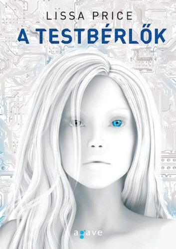

Lissa Price: A Testbérlők 
A Földet háború pusztította, emberek milliói haltak meg. S ebben a világban valóra válik az emberiség régi álma. Végre lehetséges egy másik személy testébe bújni. A 16 éves Callie rábukkan egy titokzatos helyre, ahol rászorult tinédzserek bérbe adhatják fiatal testüket a társadalom idős, de tehetős polgárainak. Amikor azonban a fejébe ültetett szerkezet meghibásodik, Callie öntudatára ébred, és dúsgazdag bérlőjének mesés életét kezdi élni.
Paul Hoffman: Isten Balkeze
Idefigyeljenek. A Shotover dűlőn található Megváltó Menedék neve egy átkozott hazugság, mert megváltásból egy fikarcnyit nem talál ott az ember, menedéket pedig még kevésbé.” A Megváltók Menedéke egy hatalmas, elszigetelt hely, ahonnan hiányzik az öröm és a remény. A legtöbb lakója még kisfiúkorában került oda, minden esetleges szándékuk és akaratuk ellenére, hogy hosszú évekig legyenek kénytelenek elviselni a Megváltó Lordok brutális zsarnokságát, akiknek a kegyetlensége és erőszakossága egyetlen célt szolgál – a Felakasztott Megváltó kiengesztelését. Senki nem ismeri ki magát tökéletesen a Menedékben, annyira végeérhetetlenek és kanyargósak a folyosói – amelyeket a vallási hevület évszázadainak bűze tölt be. Az egyik ilyen folyosón egy fiú áll és a sötét ablakon keresztül az éppen beérkező legújabb lakókat bámulja. Talán tizennégy-tizenöt éves lehet – nem tudja biztosan, ahogy senki más sem. Már rég elfeledte az igazi nevét, de itt Cale-nek hívják. Nem emlékszik semmire a múltjából. És nem tud semmit a jövőjéről… Üdvözöljük a Halál Angyalát.

Suzanne Collins: Az éhezők viadala
Észak-Amerika romjain ma Panem országa, a ragyogó Kapitólium és a tizenkét távoli körzet fekszik. A Kapitólium kegyetlenül bánik Panem lakóival: minden évben, minden körzetből kisorsolnak egy-egy tizenkét és tizennyolc év közötti fiút és lányt, akiknek részt kell venniük Az Éhezők Viadalán. Az életre-halálra zajló küzdelmet élőben közvetíti a tévé. A tizenhat éves Katniss Everdeen egyedül él a húgával és az anyjával a Tizenkettedik Körzetben. Amikor a húgát kisorsolják, Katniss önként jelentkezik helyette a Viadalra, ez pedig felér egy halálos ítélettel. De Katniss már nem először néz farkasszemet a halállal – számára a túlélés a mindennapok része. Ha győzni akar, olyan döntéseket kell hoznia, ahol az életösztön szembe kerül az emberséggel, az élet pedig a szerelemmel.